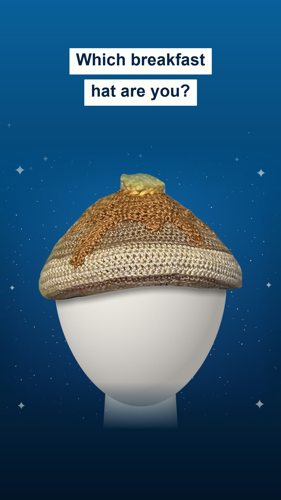
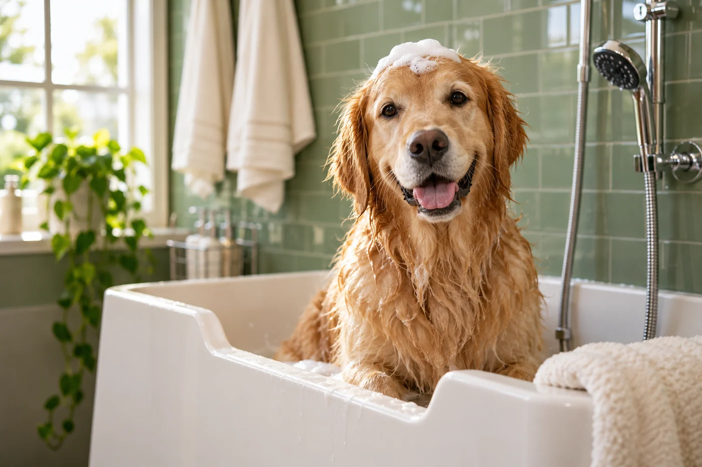

01 / SOCIAL CONTENT
CC’s House Social Kit
Product photos turned into a week of feed posts, Stories, captions, and a weekly email for a handmade crochet brand.
Explore the social kitSpencer’s creative portfolio
Website concepts, social campaigns, and playful motion. Explore the projects and the details that give each brand its personality.
Explore the projectsFour projects. Web, social, and motion.
01 / Selected projects
4 projects shown.
01 / SOCIAL CONTENT
Product photos turned into a week of feed posts, Stories, captions, and a weekly email for a handmade crochet brand.
Explore the social kit
Do you make these for adults too?
We do! Made to your measurement 🧶
Okay, I need the pancake one.
02 / MOTION & COMMUNITY
A joke about a breakfast hat, a visual sizing guide, and a thoughtful approach to comments, DMs, and customer questions.
Watch the Reels03 / HANDMADE STOREFRONT
A playful crochet storefront with product pages, image galleries, and the story behind the brand.
Explore the website
Good care.04 / PET CARE CONCEPT
Grooming, wash stations, and bath essentials, with a sample booking flow and shopping bag.
Explore the websiteFictional business. Sample appointments and products.